Contents
Getting started
The editor in one picture. Hover a number to see what it is.
- Project tabs, name and frame size — work on up to five videos at once.
- Menu bar — File, Edit, View, Create, Tools and Help.
- Export — make the video file.
- Media — your imported videos, photos and sounds. Double-click one to add it.
- Preview — drag titles and pictures here to move them; drag the corner to resize.
- Play controls — play, step frame by frame, and save the frame as a picture.
- Details — the settings of the selected clip, or of the project when nothing is selected.
- Timeline tools — Split, Delete, Duplicate, Title, Write, Draw, Marker and new tracks.
- Timeline — titles on top, then video and pictures, then sound. Drag clips to move and trim them.
Tutorials
Pick a topic, or search above.
Your first video in five minutes
BeginnerYou need a few photos or clips, and a voice, recitation or nasheed.
- Press Import (top left), or File ▸ Import video, audio or pictures…, and choose your files — or drop them anywhere on the page. They appear under Media.
- Double-click each photo or clip to put it on the timeline, one after another. Photos fade in and zoom slowly by themselves.

- Double-click the sound too: it goes on the audio track A1, where you can see its waveform.
- Move the red playhead to where a title should appear and press Title (or T). Type your words straight away; change the font, size and colour on the right.

- Press Space to watch it. Drag the ends of a clip to make it longer or shorter.
- Press Export, choose the format and quality, and press Export again. The video is made on your device and saved to your Downloads.

Cut, trim, split, move and delete clips
Beginner- Select a clip by clicking it. Shift- or Ctrl-click to select more; Ctrl+A selects everything.
- Move it by dragging — also onto another track of the same kind. Clips snap to edges, markers and the playhead; turn this off with Snap.
- Trim by dragging either end of a clip.
- Split at the playhead with Split or S. The clip becomes two that you can move, delete or style separately.
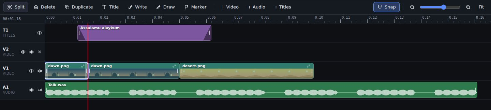
- Delete with Del. Shift+Del also closes the gap, pulling everything after it to the left.
- Copy and paste with Ctrl+C and Ctrl+V (pastes at the playhead), or Duplicate with Ctrl+D.
- Undo anything with Ctrl+Z; redo with Ctrl+Shift+Z.
Titles in English and Arabic — fonts, styles and animation
Beginner- Press Title (T) to add a title at the playhead and type in the box on the right. Arabic is written right to left by itself.
- Choose a title style in one click — Big title, Lower-third bar, Subtitle, Quote card or Arabic verse — or set the Font, size, colour, box and outline yourself. For Arabic choose Amiri, Scheherazade New, Noto Naskh Arabic, Reem Kufi or Cairo.
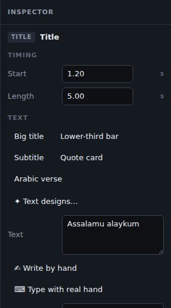
- Under Animation choose how it comes in — fade, rise, pop, slide, drop, zoom, spin, flip, blur, bounce, swing, typewriter, word by word or handwriting — and how it leaves (Exit).
- Drag the title on the picture to move it; drag the corner handle to resize it. Double-click it to edit the words right there.
Transitions between clips
Beginner- Put two clips next to each other on the same track so they touch (they snap together).
- Select the second clip and choose a transition under Transition in — crossfade, dip to black, slide, push, wipe, zoom, iris or blur — and its length.
- Or open Tools ▸ Transition gallery… to watch each one first and apply it to the selected cut or to every cut.
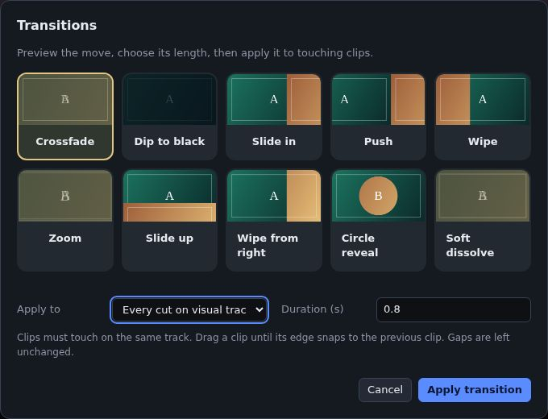
Export and share your video
Beginner- Press Export (top right).
- Under Made for, pick where it will go: YouTube, YouTube Shorts, TikTok, Instagram Reels or Facebook (or Anywhere). The editor checks the frame and the length for that site, picks MP4 at high quality, and if the shape is wrong offers Change the frame to 9:16 (or 16:9) — or Make a Short, which follows faces.
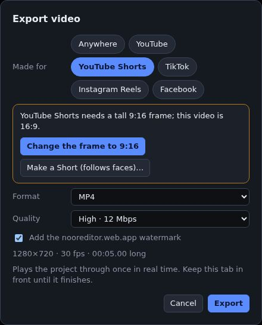
Made for YouTube Shorts: this wide video needs a tall frame, with a one-tap fix. - Choose the format: Fast formats render every frame exactly and usually finish quicker than the video plays. Chrome, Edge and Safari make MP4; Firefox makes WebM.
- Choose the quality and press Export. You can switch to another tab while a fast export works.
- When it is done, download it, or press Share video…, WhatsApp or Telegram. On phones the video itself goes to the app you choose.
- To post it, press a button under Post on. On a phone the share list opens: pick YouTube, TikTok, Instagram or Facebook and the video goes straight into that app. On a computer the site’s upload page opens: choose the video you just downloaded. A caption (the title, plus #Shorts for Shorts) is copied for you — paste it in.
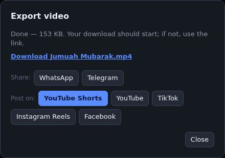
After export: share, or post on YouTube, Shorts, TikTok, Instagram or Facebook.
Save your work, continue later and work on several videos
Beginner- Your project is saved in this browser as you work, with copies of the files you imported, so it opens again just as you left it.
- File ▸ My projects… shows every project you have made in this browser, with a picture, its length and when it was changed. Open one, Duplicate it or Delete it.
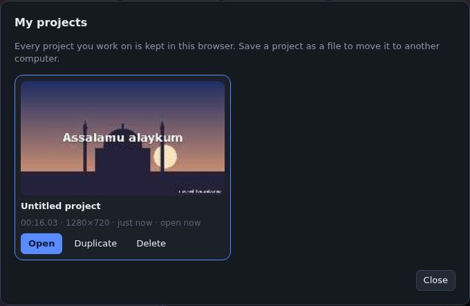
- The + next to the project name opens another project in a new tab: up to five videos at once, each with its own timeline and undo.
- File ▸ Save as a file (Ctrl+S) downloads the project as a small file to keep or move to another computer; open it there with File ▸ Open a project file… and import the same media again.
A Qur’ān verse video with each word lit up
Islamic- Open Create ▸ Qur’ān verse video….
- Choose the sūrah, the first and last āyah, the reciter (Quran.com’s reciters and more from EveryAyah) and a translation — over thirty languages, including Afaan Oromoo, Amharic, Somali, Hausa and Swahili.
- Tick Highlight each word as it is recited, choose the frame (vertical for Reels and Shorts), background and Arabic font, then press Make video.

The recitation, the Arabic with its āyah number and the translation are placed āyah by āyah, and the word being recited glows gold.

A Qur’ān video with a new background each āyah
Islamic- In Create ▸ Qur’ān verse video…, choose the sūrah, āyāt and reciter as usual.
- Under Background choose one of A new background each āyah: painted scenes (Nature, Jumu‘ah, Ramadan, Laylat al-Qadr, Hajj), or My photos once you have imported two or more pictures.

- Press Make video. Each picture starts exactly where the reciter begins its āyah, with a slow zoom and a crossfade.

A Ramadan, Eid, Jumu‘ah or Hajj video in one click
Islamic- Put a recitation or nasheed on the timeline (optional — without one each scene stays four seconds).
- Open Create ▸ Occasion video… and choose Ramadan, Eid al-Fitr, Eid al-Adha, Jumu‘ah, Hajj, Laylat al-Qadr or Nature. Its five painted scenes show straight away.
- Change the greeting, the Arabic, the second line and the closing line if you like.

- Press Make video. The scenes change on the pauses of the voice, with the greeting on top.

A hadith video
Islamic- Open Create ▸ Hadith video….
- Choose a hadith, the languages to show and the look, then press the button to make it.
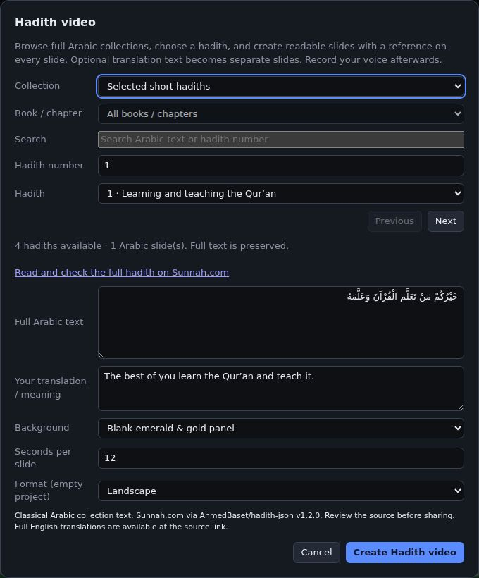
Nasheed lyrics on screen
Islamic- Open Create ▸ Nasheed lyrics….
- Choose one of the original verses in English or Arabic, or type your own, and choose how each line appears: highlighted word by word, faded in, or written by hand.
- Add your own vocal recording for the sound. Create ▸ Sync lyrics to vocals… times the lines to the voice on your device.
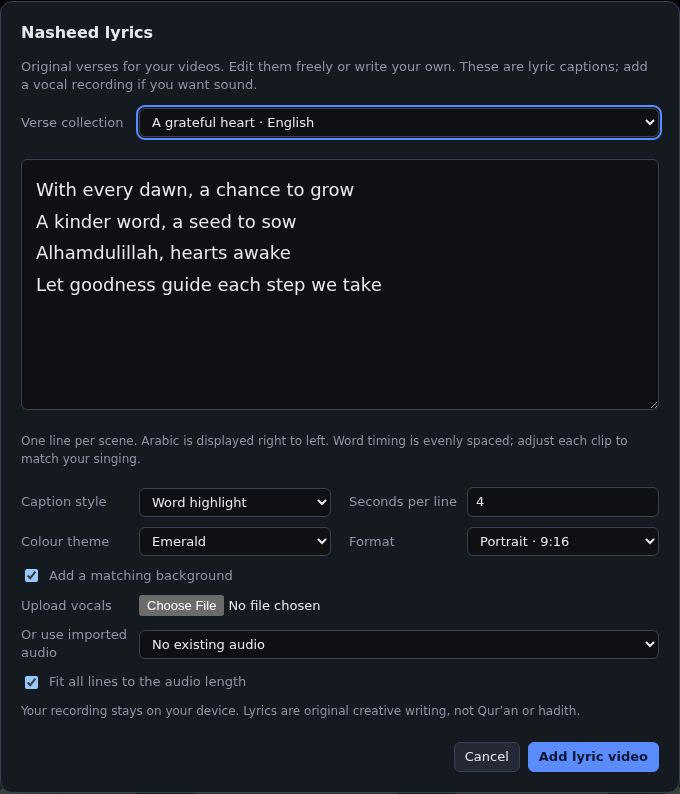
Start from a template — posters, invitations and reminders
Creative- Open Create ▸ Templates… and pick one: lectures, halaqas, Ramadan and Eid, Zoom classes, competitions and many more.
- Fill in the title, speaker, date and place underneath, choose the format (video, poster or story) and press Use template.

A title written by hand
Creative- Move the playhead and press Write (W) under the picture, then type your words.
- Press Play: a hand writes the words out. For a title you already have, press ✍ Write by hand under its text box.
- Choose the hand (realistic, emoji ✍️ or sketch), its size and skin colour, the pen colour and the Write time on the right.

Draw on your video, with a hand drawing it
Creative- Press Draw (D). The picture gets bigger and the drawing bar appears above it.
- Choose the pen, highlighter, line, arrow, box or circle, a colour and a thickness, and draw.
- Press Done to keep it, or Play to keep it and watch a hand draw it stroke by stroke.

Animated stickers, arrows and decorations
Creative- Open Create ▸ Animated stickers & arrows….
- Pick one of about fifty — arrows, rings, stars, crescents, lanterns, masjids, the Kaaba, books, a camel, dates, a qibla compass, thumbs up and more.
- Choose its colour, movement (pop, pulse, float, wiggle, bounce, spin, swing or drift), size, angle, place and how long it stays, then press Add sticker.
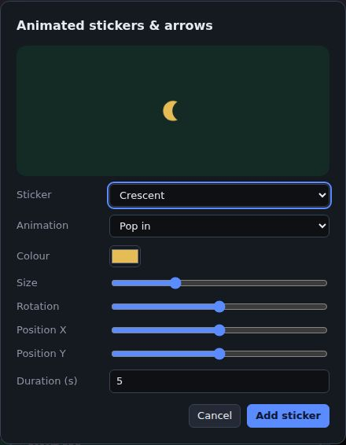
Animate anything with keyframes
Creative- Select a clip — a title, photo, video, drawing or sticker.
- Move the playhead to where the movement starts and press ◆ Add keyframe here under Keyframes.
- Move the playhead later and change Position, Scale, Opacity or Turn: a second keyframe is added there. Play — the clip glides between them.
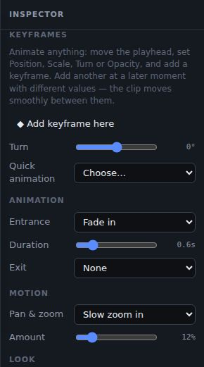
Colour looks, effects and picture-in-picture
Creative- Select a photo or video clip.
- Under Look choose a style in one click — Warm, Cool, Golden hour, Vintage, Black & white, Vivid, Faded, Dramatic or Night — then fine-tune the colour.
- Under Transform mirror, flip, rotate or crop it; under Frame add rounded corners, a border and a shadow — great with a smaller Scale for picture-in-picture.
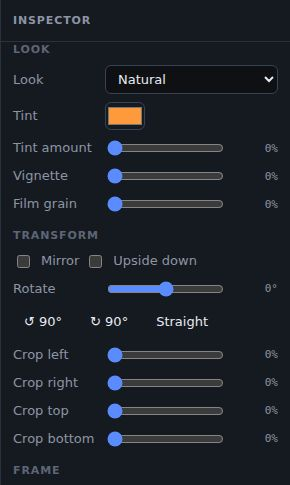
Your brand kit — logo, colours, intro and outro
Creative- Open Create ▸ Brand kit… and add your name, logo, colours, font and intro and outro words. Press Save kit.
- Save and apply puts your logo in a corner of every frame, your font and colours on every title, and optionally a 3-second intro and 4-second outro.

Volume, ducking under speech and cleaning up a voice
Sound- Select an audio or video clip. Set its Volume (up to 200%) and fades, or mute it.
- Normalise loudness makes a quiet phone recording as loud as it can be without distorting.
- Clean up voice removes background noise with a small speech-trained model, on your device. The original is kept.
- For a nasheed or nature sound under a talk, tick Duck … under speech (or press ▁▃▅ on its track): it gets quieter by itself whenever someone speaks.
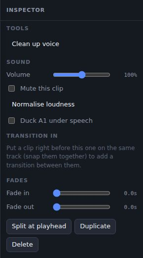
Nature sounds and sound effects — no music
Sound- Open Create ▸ Sound library (no music)….
- Press ▶ Listen to hear rain, wind, waves, a stream, birds, crickets or a fire, or effects such as whoosh, pop, ding, typing and page turn.
- Press Add to put it at the playhead. Nature sounds can be 15 seconds to 2 minutes long.
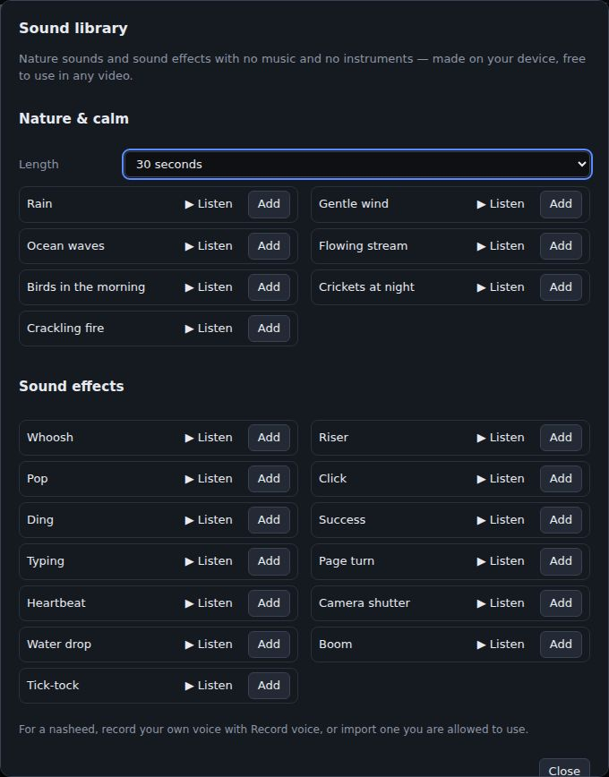
A slideshow that changes on every pause — and jump cuts
Sound- Put the recitation or talk on the timeline and select it.
- Open Create ▸ Pictures on the pauses & jump cuts…. It listens to the voice and says how many pauses it found.
- Tick the photos to use, choose a transition and set Shortest scene.

- Press Apply: each photo starts exactly in a pause of the voice.

Record your voice, your screen or your camera
Sound- Create ▸ Record your voice… records from the microphone; listen back before adding the take.
- Create ▸ Record screen & camera… records your screen with your camera in a round bubble in a corner — ideal for lessons — or only the screen, or only the camera.
- Choose the corner, shape, size and ring colour and press Start recording. After a 3-2-1 countdown, use Pause and Stop. The recording goes onto the timeline.
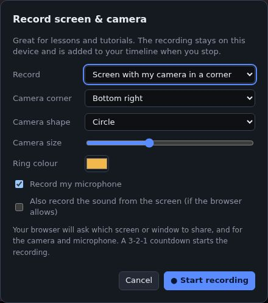
Captions in Afaan Oromoo, Amharic, Somali and more
Captions- Select the clip with the voice and open Tools ▸ Auto captions (speech to text)….
- Choose Afaan Oromoo: paste what is said, one sentence per line — each line is timed to the voice by its pauses.

- Press Make captions. Each line becomes a caption on a new Captions track.

- For Amharic, Somali, English, Arabic and many more, choose the language and the speech recogniser writes the words for you (it downloads once).

Make a Short for YouTube Shorts, Reels, TikTok or WhatsApp Status
Social- Open Create ▸ Make a Short from this video… and choose the part of the video (up to 3 minutes) and a big title.
- Choose Fill the tall frame — Follow the speaker’s face keeps the speaker in the middle — or fit with a blurred background. Add a progress bar, an end card and your brand kit.

- Press Make Short. It opens in a new tab; your original video is not changed.

Keep the speaker in a tall frame (auto-reframe)
Social- With a wide video in a tall or square project, open Tools ▸ Auto-reframe — follow the face….
- Press Follow the face. The picture glides to keep the face in the middle, and holds still while the speaker stays near the centre.


Change the shape for each social network
Social- Open Tools ▸ Resize for social media… (or choose a Frame size under View).
- Pick WhatsApp Status / Reels (9:16), YouTube (16:9), Instagram square (1:1) or portrait (4:5), and how clips fit: blurred background, plain bars, or crop.
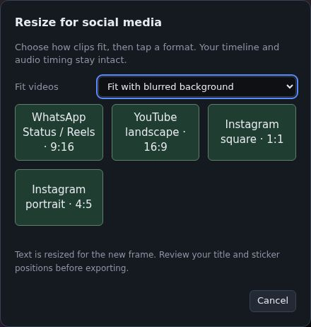
Editing on your phone
Settings- Everything fits on the screen: + at the top is the Create menu, ☰ holds File, Edit, View, Tools and Help, the folder shows your media, the sliders show the details of what you selected, and the arrow is Export.
- When you have typed your words or changed the details, press the big ✓ Done button at the bottom (or × at the top). Your changes are saved as you make them; Done closes the details and shows the picture again.
- The picture takes only the room it needs; the rest is timeline. Pinch the timeline with two fingers to zoom, and drag the blue bar to give either more room.


Menu reference
Everything is in the menu bar at the top right, next to Export. Point at one menu, then at the next, or use the arrow keys.

File
| Item | What it does |
|---|---|
| New project · New tab | Start again, or open another project beside this one |
| Open a project file… · Save as a file | Open or download a project file (Ctrl+S) |
| My projects… | Every project kept in this browser |
| Import video, audio or pictures… | Add files to Media |
| Save this frame as a picture | A PNG of the picture at the playhead |
| Export video… | Make the video file |
Edit
| Item | What it does |
|---|---|
| Undo · Redo | Step back or forward |
| Cut · Copy · Paste · Duplicate | Copy clips; paste at the playhead |
| Split at the playhead | Cut the selected clip in two (S) |
| Delete · Delete and close the gap | Del · Shift+Del |
| Select all | Every clip |
| Add a marker · Copy chapters for YouTube | Mark moments and turn them into YouTube chapters |
| Transition on every cut… | One transition between all touching clips |
View
| Item | What it does |
|---|---|
| Expand the preview · Hide the side panels | Give the picture more room (Esc to come back) |
| Preview size | Small, medium or large |
| Frame size | 16:9, 9:16, square or 4:5 |
| Fit the whole project · Snap | Zoom the timeline to fit; snap to edges and the playhead |
Create
| Group | Items |
|---|---|
| Add | Title, Colour or gradient card, Title written by hand, Drawing |
| Islamic videos | Qur’ān verse video, Nasheed lyrics, Hadith video, Occasion video |
| Ready-made designs | Templates, My templates, Drawing images, Animated stickers & arrows, Background images, Decorative shapes |
| Sound and recording | Record your voice, Sync lyrics to vocals, Sound library, Record screen & camera, Pictures on the pauses & jump cuts |
| Share and brand | Brand kit, Make a Short |
Tools
| Group | Items |
|---|---|
| Captions | Auto captions, Timed captions from your text, Import subtitles, Save a titles track as subtitles |
| Timeline | Transition gallery, Resize for social media |
| Video | Auto-reframe — follow the face |
| Effects | Remove / replace background |
Help
This guide, keyboard shortcuts and About (version and contact).
Keyboard shortcuts
| Keys | Action |
|---|---|
| Space | Play / pause |
| S | Split at the playhead |
| Del · Shift+Del | Delete · delete and close the gap |
| Ctrl+C / X / V | Copy, cut, paste at the playhead |
| Ctrl+D · Ctrl+A | Duplicate · select all clips |
| T · W · D | Title · title written by hand · draw |
| M · F | Marker · freeze frame |
| ← → | One frame back or forward (Shift: one second; Alt: nudge the selected clips) |
| Home · End | Start · end |
| Ctrl+Z · Ctrl+Shift+Z | Undo · redo |
| Ctrl+S | Save the project as a file |
| + − · Ctrl+wheel | Zoom the timeline |
| Esc | Close a menu or window; leave the expanded preview |
Questions & troubleshooting
Is it free? Are my videos uploaded?
Yes, it is free, and no — your videos, photos and recordings are opened and exported on your own device. Only the parts the tools download (fonts, Qur’ān recitations, the captions model) come from the internet.
How do I remove the watermark?
Free videos carry a small nooreditor.web.app mark in the corner. NoorEditor Pro removes it: untick it in the Export window and the Pro offer appears.
Export is slow or stops
Choose a Fast format (MP4 in Chrome, Edge or Safari). Very long or 1080p videos take longer on phones; close other tabs, or export on a computer. Real-time formats need the tab to stay in front.
There is no sound in the exported video
Check the clip and its track are not muted (the speaker buttons), and that the clip’s volume is above 0. Background sound set to duck goes quiet while someone speaks — that is expected.
My file will not import
Use common formats: MP4, WebM or MOV video, MP3, WAV, M4A or OGG audio, and JPG, PNG or WebP pictures. Some iPhone HEVC videos only play in Safari; convert them to MP4 first if needed.
The captions or Qur’ān recitation do not download
They need the internet the first time. Check your connection and try again. For the Qur’ān tool you can also import your own recitation and choose it under Your own recitation.
Does it work offline?
Yes, once it has been opened: the editor keeps itself on your device. Tools that download models need the internet the first time.
Where did my project go?
Projects are kept in this browser, on this device — open File ▸ My projects…. They are not shared between browsers or devices; use File ▸ Save as a file to move one.
About
Help ▸ About shows the version, who made the editor and how to get in touch. Qur’ān text, translations and recitations come from Quran.com and EveryAyah. Export uses mediabunny; captions use Whisper and voice clean-up uses RNNoise, downloaded when first used.
Nothing found. Try another word, or ask us.